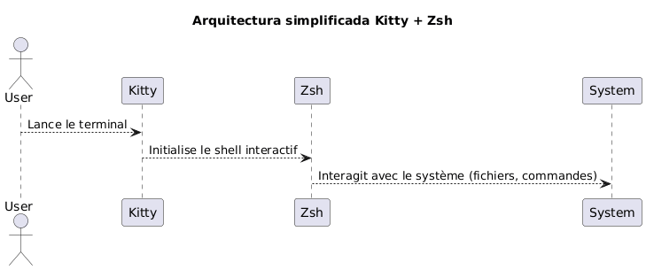
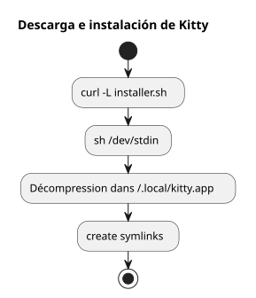
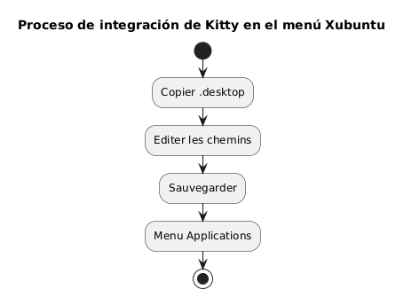
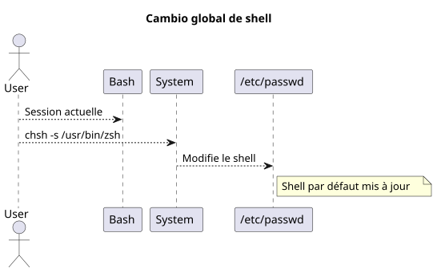
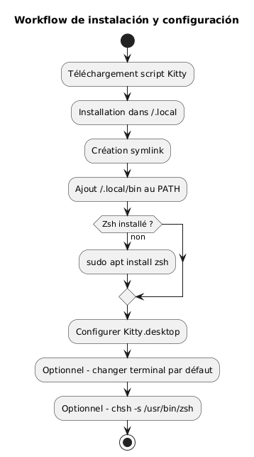
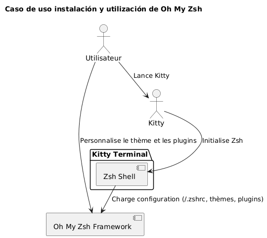
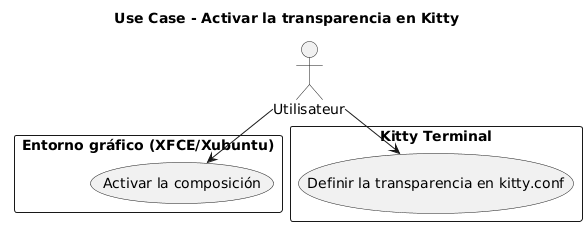
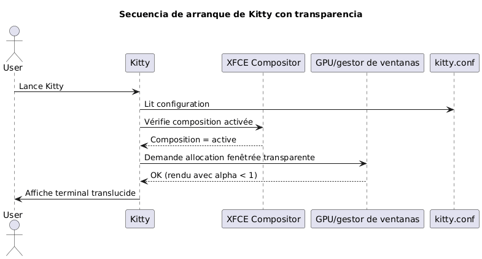

Instalar el terminal Kitty y configurar Zsh como el shell predeterminado en Xubuntu
Publié le 07 May 2026 Mis à jour le 2026-05-07
- ¿Por qué elegir Kitty y Zsh?
- Requisitos del sistema
- Descarga e instalación de Kitty
- Integración de Kitty en Xubuntu
- Instalación de Zsh
- Establecer Zsh como shell predeterminado
- Configuración de Zsh (opcional)
- Resumen del workflow completo
- Verificación final
- Instalación y configuración de Oh My Zsh
- Activar la translucididad en Kitty
- Desactivar el pitido audible (audible bell)
- Actualización de Kitty
- Referencias
- Conclusión
Esta guía explica paso a paso cómo instalar el terminal kitty en Xubuntu, configurarlo correctamente y reemplazar bash por zsh como shell predeterminado. El proyecto kitty está disponible aquí: https://github.com/kovidgoyal/kitty.
__ Kitty es un terminal moderno, rápido y configurable, especialmente adecuado para desarrolladores exigentes. </think>
¿Por qué elegir Kitty y Zsh?
Kitty se distingue por :
-
Un rendimiento superior gracias a la aceleración GPU,
-
Una configuración totalmente basada en un texto único,
-
Un excelente soporte para fuentes y ligaduras.
Zsh es, por su parte, un shell interactivo potente que ofrece:
-
Una completación inteligente,
-
Un prompt personalizable,
-
Una gran compatibilidad con bash.
Al combinar Kitty y Zsh, obtienes un entorno productivo y estético.

|
Esta guía está intencionalmente limitada a la instalación mediante script y a Xubuntu. |
Requisitos del sistema
Antes de comenzar, asegúrate de tener:
-
Xubuntu instalado,
-
un acceso a internet,
-
un shell bash funcional para lanzar el script.
Verifique su entorno :
uname -a
lsb_release -aDescarga e instalación de Kitty
Kitty recomienda instalarlo mediante un script oficial que coloca los archivos en`~/.local/kitty.app`.
|
Este método es independiente de los gestores de paquetes (sin`apt`). |
Descargar el script de instalación
Ejecute el siguiente comando:
curl -L https://sw.kovidgoyal.net/kitty/installer.sh | sh /dev/stdinEste comando realiza:
-
descarga de los binarios,
-
extracción en`~/.local/kitty.app`,
-
creación de enlaces simbólicos

Creación de los enlaces simbólicos
Para poder invocar`kitty`desde el terminal, cree un enlace simbólico :
ln -s ~/.local/kitty.app/bin/kitty ~/.local/bin/kittyAgregue`~/.local/bin`añadir a tu PATH si aún no lo has hecho :
echo 'export PATH="$HOME/.local/bin:$PATH"' >> ~/.zshrc
source ~/.zshrcPuedes verificar la instalación:
kitty --versionIntegración de Kitty en Xubuntu
Para que Kitty aparezca en el menú de aplicaciones :
Copiar el archivo desktop
Copie el archivo`.desktop`proporcionado :
cp ~/.local/kitty.app/share/applications/kitty.desktop ~/.local/share/applications/Modificar el archivo desktop
Edite el archivo :
nano ~/.local/share/applications/kitty.desktopVerifique o modifique las siguientes líneas:
[Desktop Entry]
Version=1.0
Type=Application
Name=Kitty Terminal
Comment=Fast GPU-based terminal emulator
Exec=/home/$USER/.local/kitty.app/bin/kitty
Icon=kitty
Categories=System;TerminalEmulator;Reemplacen`YOURUSER`por su nombre de usuario

Asociar Kitty como terminal por defecto (opcional)
Para que Kitty sea el terminal iniciado por defecto:
sudo update-alternatives --install /usr/bin/x-terminal-emulator x-terminal-emulator ~/.local/kitty.app/bin/kitty 50
sudo update-alternatives --config x-terminal-emulatorSeleccione`kitty`en el menú propuesto.
Instalación de Zsh
Si Zsh aún no está instalado, ejecute:
sudo apt install zshComprueba la instalación:
zsh --versionEstablecer Zsh como shell predeterminado
Puedes cambiar tu shell globalmente o solo en Kitty.
Método global (para todos los terminales)
Identifica el camino absoluto :
which zshEn general`/usr/bin/zsh`.
Modifica el shell predeterminado:
chsh -s /usr/bin/zshDesconéctese y reconéctese.

Método específico para Kitty
Si prefieres solo cambiar el shell en Kitty, edita el archivo de configuración:
nano ~/.config/kitty/kitty.confAgrega esta línea :
shell zshGuarda y reinicia Kitty.
Configuración de Zsh (opcional)
Para personalizar tu Zsh :
Crear un archivo .zshrc
touch ~/.zshrc
nano ~/.zshrcEjemplo de configuración mínima
export ZSH_THEME="robbyrussell"
export PATH="$HOME/.local/bin:$PATH"
alias ll="ls -la"Resumen del workflow completo
El esquema siguiente resume todo el proceso :

Verificación final
Lanza Kitty :
kittyDeberías ver que`zsh`está activo :
echo $SHELLResultado esperado :
/usr/bin/zsh
Para modificar el tamaño de la fuente enKitty, hay que ajustar el parámetro`font_size`en el archivo de configuración. Aquí está el procedimiento detallado:
📂 Abrir el archivo de configuración
El archivo de configuración principal se encuentra normalmente en:
~/.config/kitty/kitty.confSi este archivo no existe todavía, puedes crearlo. Ejemplo :
nano ~/.config/kitty/kitty.conf🖋️ Agregar o modificar `font_size
Agregue la siguiente directiva, o modifíquela si ya existe:
font_size 14.0Aquí`14.0`corresponde al tamaño deseado. Puedes poner cualquier valor decimal, por ejemplo`12.0`, 15.5, etc.
💾 Guardar y reiniciar Kitty
-
Guarde`Ctrl + O`, luego`Entrée`) y salgan (
Ctrl + X) si utilizas`nano`. -
Cierra todas las ventanas de Kitty, luego reinicia el terminal para que el cambio surta efecto.
�✅ Ajuste dinámico (Zoom temporal)
Si desea hacer zoom adelante/atrás temporalmente sin modificar la configuración, utilice los atajos de teclado predeterminados:
-
Aumentar el tamaño de la fuente:
Ctrl + Shift + =
-
Disminuir el tamaño de la fuente:
Ctrl + Shift + -
-
Restablecer el tamaño :
Ctrl + Shift + Backspace
Estos ajustes no persisten después del cierre del terminal.
Instalación y configuración de Oh My Zsh
Una vez que Zsh esté instalado y configurado como shell predeterminado, puede enriquecer su entorno con Oh My Zsh, un framework de gestión de la configuración Zsh, que ofrece:
-
una colección de temas para el prompt,
-
muchos plugins,
-
una organización clara de la configuración
Instalación de Oh My Zsh
Asegúrate de que Zsh esté activo:
zsh --versionSi es necesario, lanza:
zshLuego descargue y ejecute el script de instalación oficial
sh -c "$(curl -fsSL https://raw.githubusercontent.com/ohmyzsh/ohmyzsh/master/tools/install.sh)"Este script:
-
crea la carpeta`~/.oh-my-zsh`,
-
guarda posiblemente su archivo`~/.zshrc`,
-
activa automáticamente el nuevo prompt.
Cambiar el tema
Abre tu archivo de configuración:
nano ~/.zshrcModifica la variable`ZSH_THEME`para elegir otro tema (por ejemplo`agnoster`) :
ZSH_THEME="agnoster
Guarde y luego vuelva a cargar la configuración:
source ~/.zshrcVerificación
Inicia Kitty y verifica que el prompt haya cambiado correctamente. Puedes confirmar que Oh My Zsh está activo ejecutando :
echo $ZSHEl resultado debería ser similar a :
/home/su_usuario/.oh-my-zsh
Diagrama de caso de uso

Activar la translucididad en Kitty
Una de las funcionalidades más apreciadas de Kitty es la posibilidad de añadir transparencia al fondo del terminal. Esto permite ver ligeramente el entorno subyacente (ventana, escritorio, etc.), lo cual es particularmente útil para multitarea.
Prerequisitos para la transparencia
La transparencia en Kitty se basa en elcompositor de ventanasutilizado por el entorno gráfico. En Xubuntu (basado en XFCE), asegúrese de que lacomposition está activada.
-
clic derecho en el escritorio > Configuración >Configuración del gestor de ventanas,
-
pestañacompositor: la casilla "Activar la composición" debe estar marcada.

Configuración de la transparencia en kitty.conf
Abra su archivo de configuración`~/.config/kitty/kitty.conf`:
nano ~/.config/kitty/kitty.confAgrega o modifica las siguientes líneas:
background_opacity 0.85Este parámetro acepta valores entre :
-
1.0→ opaco (ninguna transparencia), -
0.0→ totalmente transparente (inutilizable), -
valores intermedios como`0.90`,
0.75, etc.
Un buen compromiso visual está generalmente entre`0.85` et 0.95.
Reiniciar Kitty
Cierre todas las instancias de Kitty, luego reinicie una nueva ventana para que los cambios surtan efecto:
kittyComplementos posibles
Si utilizas un fondo de terminal personalizado, también puedes definir un color de fondo con transparencia (en RGBA) :
background #1e1e2effLa última componente (ff) indica la opacidad (de`00` à ff)
Diagrama de secuencia - Inicialización de Kitty con transparencia

Limitaciones conocidas
|
La translucididad no funciona si : - el compositor XFCE está desactivado, - un gestor de ventanas incompatible es utilizzato, </think> - un gestor de ventanas incompatible es utilized, Note: I accidentally typed Italian; correcting: - un gestor de ventanas incompatible es utilizado, Now final correct: - un gestor de ventanas incompatible es utilizado, - estás utilizando Kitty en modo tmux en segundo plano sin soporte para transparencia. |
Desactivar el pitido audible (audible bell)
De forma predeterminada, Kitty emite un sonido de bip cuando se ingresa un comando erróneo o cuando un evento terminal lo activa. Este ruido puede resultar rápidamente molesto, especialmente en un entorno de desarrollo intensivo.
Para desactivar este comportamiento, agregue la siguiente directiva al archivo`~/.config/kitty/kitty.conf`:
audible_bell no|
También puede activar un retorno visual en lugar del pitido sonoro con: |
Actualización de Kitty
Como Kitty se instala mediante un script y no mediante un gestor de paquetes, la actualización se realiza volviendo a ejecutar el script de instalación oficial. Esto permite descargar la última versión y actualizar su instalación existente en`~/.local/kitty.app`.
|
El sufijo`.app`en el camino`~/.local/kitty.app`es la convención de instalación de Kitty en Linux mediante su script oficial, y en ningún caso indica una compatibilidad exclusiva con macOS. |
|
Antes de ejecutar el comando de actualización, asegúrate de estar en tu directorio personal ( |
Ejecuta el siguiente comando desde tu directorio personal :
curl -L https://sw.kovidgoyal.net/kitty/installer.sh | sh /dev/stdinEste script se encargará de :
-
Descargar los binarios de la nueva versión.
-
Extraer los archivos en`~/.local/kitty.app`.
-
Actualizar los enlaces simbólicos si es necesario.
Después de la actualización, se recomienda cerrar todas las instancias de Kitty y reiniciarlas para asegurarse de que la nueva versión se aplique correctamente.
Referencias
Si desea profundizar en la personalización, consulte la documentación oficial:
Conclusión
Ahora dispone de:
-
de un terminal moderno y de alto rendimiento (Kitty)
-
de un shell potente y personalizable (Zsh)
-
de una configuración limpia e independiente de los paquetes del sistema
-
de un terminal estético y funcional equipado con Oh My Zsh